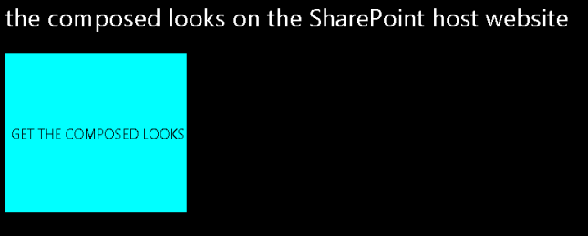

This sample autohosted app shows how to set values in the AppManifest.xml file and the web.config file to configure an app for SharePoint and a remote ASP.NET web application to be autohosted on a SharePoint Online site with
an associated Windows Azure Web Site.
It also shows how to use the SharePoint REST APIs to perform Read operations on SharePoint lists and list items, and how to retrieve only selected fields from the list. The app displays all of the items in the Composed Looks
list of the host web.
The default.aspx page of the app appears after you install and launch the app.
Figure 1. default.aspx page in the app

When the Metro-style button is chosen, a grid displays the items in the
Composed Looks list. Only three columns are shown.
The sample demonstrates how to read data by using the OData protocol from REST endpoints. Additionally, it demonstrates how to parse Atom-formatted XML returned from these endpoints by using the classes of the
System.Xml.Linq namespace. (Other samples of apps for SharePoint show how to do this by using the classes of the
System.Xml namespace.)
For more information about the SharePoint REST APIs, see the topic
Programming using the SharePoint 2013 Preview REST service in the SharePoint 2013 developer documentation. For more information about working with Atom and OData, see
OData: AtomPub Format.
Prerequisites
- A SharePoint 2013 development environment that is configured for app isolation and OAuth.
- Visual Studio 2012 and SharePoint development tools in Visual Studio 2012.
- Web Deploy 2.0 installed on the computer with Visual Studio. The version of Visual
Studio and its SharePoint tools available for SharePoint 2013 should install this automatically.
Important contents
- FirstAutohostedApp project, which contains the AppManifest.xml file.
- FirstAutohostedAppWeb project.
- Default.aspx file, which contains the HTML and ASP.NET controls for the user interface of the app.
- Default.aspx.cs file, which contains the C# code that uses the REST APIs to read data.
- TokenHelper.cs file, which is added to the project by Visual Studio and is used to access the OAuth infrastructure.
- Web.config, web.debug.config, and web.release,config files. (The web.config file that is packaged with the app is a merger of web.config and either web.debug.config or web.release.config.)
Configuration instructions
Open the FirstAutohostedApp.sln file in Visual Studio 2012. In
Properties pane of Visual Studio, change the Site URL
property of the app for SharePoint project in Visual Studio to the absolute URL of your SharePoint 2013 developer test site. For example, "http://MyDevServer/".
Build instructions
- Choose the FirstAutohostedApp project in
Solution Explorer (not the top node for the whole Visual Studio solution). On the menu bar, choose
Publish, Build. (Do not choose the F5 key.)
- In the Publish dialog box, choose the
Publish button. The resulting app package file (which has the Windows Azure Web Sites package inside) has an .app extension and is saved in the app.publish subfolder of the bin\Debug folder of the Visual Studio project.
Deploying and testing the sample
- Log into SharePoint Online 2013 as a tenant administrator.
2. At the top of the page, choose Admin, SharePoint.
3. On the SharePoint Administration Center page, choose
apps, and then choose Corporate Catalog.
4. On the App Catalog page, choose the upload link.
5. On the Add a document form, browse to your app for SharePoint package and choose the
OK button. A property form for new items opens.
6. Fill out the form as needed and choose the Save button. The app for SharePoint is saved in the catalog.
7. Browse to any website in the tenancy and choose Site Contents
to open the Site Contents page.
8. Choose Add an App, and on the Your Apps
page, find the app. If there are too many to scroll through, you can enter any part of the app title (First Autohosted App) into the search box.
9. When you find the app, choose the Details link beneath it, and then on the app details page that opens, choose
Add It.
10. You are prompted to grant permissions to the app. Choose Trust It.
11. The Site Contents page opens and the app is listed. For a short time, a message below the title indicates that it is being added. When this message disappears, you can choose the app title to launch the app. (You may need to refresh
the page to make the message disappears.)
12. Choose the GET THE COMPOSED LOOKS button to display a grid with three fields from the Composed Looks list of the host web.
Change log
First release.
Related content
Contact info
DocThis@microsoft.com